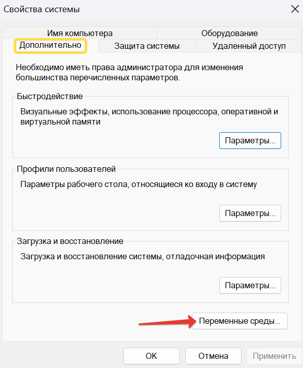
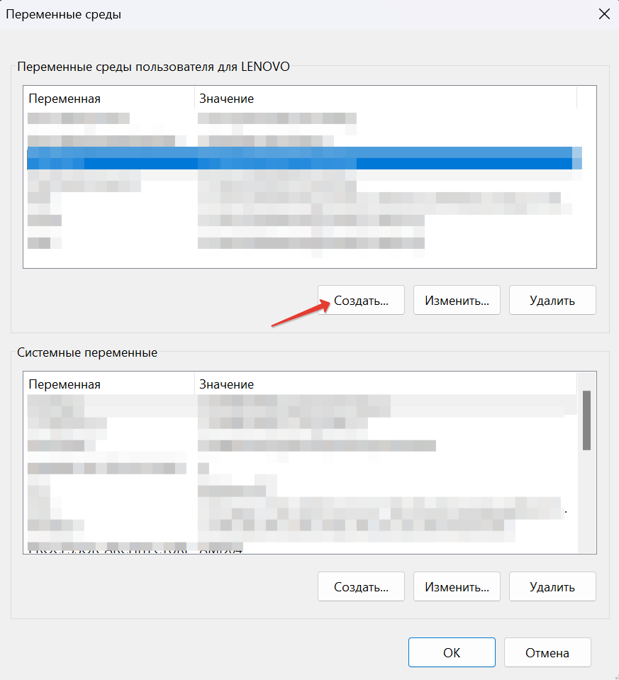
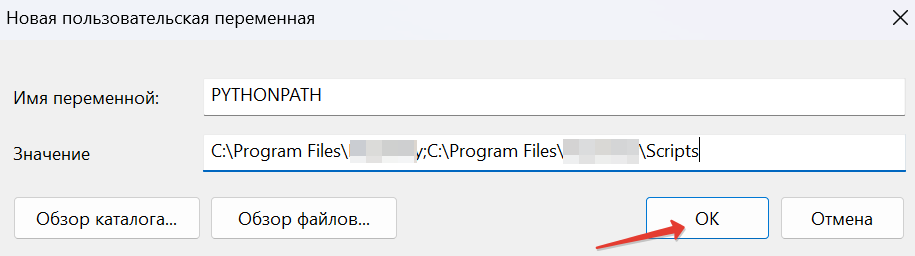

To set PYTHONPATH on a windows machine follow the below steps:
Open the Windows search bar and type python.exe (do not press
Enter). Then right-click on the python.exe that appears in the
menu and select Open file location.
Copy all path to python.exe.
Then right-click This PC and select Properties. Сlick on the
Advanced system settings option. In the next window, select the
Advanced tab and select Environment Variables.

In the User Variables menu, find a variable named Path. Then
paste the path you copied earlier into the Variable Value option.
If you cannot find variable Path, create one. To do this,
click New. Then in the variable name form type PYTHONPATH
and paste your Python path into the variable value field.

Go back to the python.exe folder and open the Scripts folder.
Copy its path.
Go back to Environment variables. Type a semicolon after the path
to python.exe and paste the path to the Scripts folder. Click
OK.

To see if Python is added to the Windows PATH, open a terminal and type
python--version, then press Enter. If it returns the currently
installed version of Python, then you have successfully added it to the
Windows PATH.